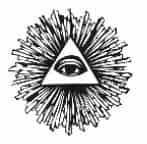

ONUNCU BÖLÜM
GÜLÜN ADI
KURUKAFA VE ÇİFT KEMİK
Rosslyn Şapeli’nin kurucusu William St. Clair’in kalıntılarının Rosslyn’de, Tapınakçıların geleneklerine uygun biçimde, bir kurukafa ve çapraz kemikle işaretlenmiş bir mezarın içinde olduğu söylenir. Kurukafa ve çapraz kemik, Boullionlu Baldwin’in bir Ermeni prensesiyle evlenmesi sonuncunda çok önemli yeni bir soyun ortaya çıkmasının simgesidir. Bu soy, Kutsal Topraklar’ı iki yüz yıl boyunca yönetecek olan ve sonra ardılları Güller Savaşı’nı başlatacak olan Lusignan ailesidir. Rosslyn’in “gül soyu” gibi, Tapınakçıların çapraz gülü gibi, “Güller Tarikatı” olan İlluminati adı için belirgin bir alternatif olmuştur.
Kurukafa ve çift kemik simgesinin öyküsü, Kudüs’ün ilk Haçlı kralı olan, Boulliounlu Godfrey’in de kardeşi olan Baldwin’le başlar. Öyküyü ilk anlatan kişi, 12. yüzyılda yaşayan Walter Mapp oldu. Öykü bugün Tapınak Şövalyeleri’yle bağlantılı olmasa da, 1307-1314 arası yargılanmaları döneminde Tapınakçılar efsanesine sıkı sıkıya örülüydü. Hatta Tapınakçıların duruşmaları sırasında adı da anıldı. Efsaneye göre, kimliği belirsiz bir “Sidon Lordu”, “Maraclealı bir hanıma” (Maraş kenti) âşıktır. Bu “Sidon Lordu” Baldwin’di ve evlendiği Ermeni prenses de Arda idi. Büyükbabası Kilikyalı Ruben tarafından kurulmuş olan, Ermenistan’ın Ruben ailesinden geliyordu. Kilikyalı Ruben, Hazar Hakanı I. Buzir’in kızlarından birinin soyundan geliyordu. Bu kız Abhazalardan II. Constantin’le evlenmişti. Ermenistan, on birinci yüzyılın sonlarında Alparslan önderliğindeki Selçuk Türklerinin tehdidi altındaydı. Ermeni Kralı II. Gagik, ölümden ya da esaretten kurtulabilmek için, oğlu I. Ruben ve bazı adamlarıyla birlikte Toros Dağları’nın boğazlarından kaçtı ve oradan Kilikya’daki Tarsus’a geçti. Orada Bizans imparatoru onları himaye etti.
Haçlıların geri kalanıyla birlikte Kudüs’e gitmek üzere Anadolu’yu geçmekte olan Baldwin ordudan ayrıldı ve Ruben’in torunu olan Urfalı Toros tarafından evlat edinildi. Selçuk Türklerine de, Bizanslılara da düşman olan Ermeniler, Toros suikasta kurban gidince Urfa’nın Haçlı kontu olarak Baldwin’in hükümdarlığını hemen kabul ettiler. Anlaşıldığı kadarıyla, Ermeniler genel olarak Baldwin’in yönetiminden memnun oldular ve aralarından bazıları Haçlılarla birlikte dövüştü. 1097 yılında Antakya alındığında, Toros’un babası Constantine, Haçlılardan “baron” payesi aldı.
Walter Mapp’a göre, Baldwin’in karısı aniden öldü ve Baldwin cenaze gecesinde sözüm ona mezara gidip cesedi geri çıkardı ve cesetle birlikte oldu. Sonra, gaipten bir ses ona dokuz ay sonra dönmesini, bir oğul bulacağını söyledi. Söylenen zamanda dönüp mezarı yeniden açtı ve bir iskeletin kaval kemikleri üzerinde bir kurukafa buldu. Aynı ses ona, “Bunu iyi koru, çünkü güzel şeyler getirecek” dedi ve o da kemikleri her zaman yanında taşıdı. Onun koruyucu muskası oldu ve sadece büyülü kelleyi göstererek düşmanlarını yenmeye başladı.
Zaman içinde, bu kemikler Tapınakçılara geçtiler ve duruşmalar sırasında bu kelleye Baphomet adı verildi. Engizitörler, öyküdeki kadının Ermeni olduğunun farkındaydılar. Bu sayede Ermeni Kilisesi’yle ve Pavliki mezhebiyle bağlantı kurabildiler. Pavlikiler ve Bogomiller, Katharcılıkla eş tutuluyorlardı, kilise de bunların hepsinin kökünü Albigen Seferi’nde kazımıştı.
1113 yılında Baldwin, Adelaide del Vasto’yla evlendi. Evlilik sözleşmesine göre çocukları olmazsa, Kudüs tahtının vârisi, Adelaide’nin ilk kocası olan Roger, I. Guiscard’dan doğma Sicilyalı II. Roger olarak tahta çıkacaktı. Bu Roger, tarihte “Neşeli Roger”28 olarak geçti ve gemilerinde kurukafa ve çift kemik bayrağı çekti. Roger, Castilyalı VI. Alfonso’yla, İsmaili karısı Zahide’den doğma Elvira’yla evlendi.
LUSİGNAN HANEDANI
Ruben Hanedanı yüz yıl içinde Kilikya’da bir krallıkla ödüllendirildi ve Almanya’ya bağlandı. Bu krallık 1375 yılında Memlukların yıkmasına kadar sürdü. Bu süre içinde, Ermeni soylularıyla Tapınakçılar arasındaki iç evlilikler sonucunda Haçlıların Kutsal Topraklar’ı işgali boyunca etkili olacak olan ve soyları Orta Çağ boyunca çok güçlü ve gizemci bir geleneğin oluşmasına neden olacak Lusignan Hanedanı ortaya çıktı.
Lusignan hükümdarları, La Marche kontlarıydı. Fransa’nın Marche denen yöresi, Limousin ve Poitou bölgelerinin bir bölümünü içine alan, küçük bir sınır boyuydu. Aquitanya Dükü III. William, onuncu yüzyıl ortasında bağlı beylerinden biri olan Boso’ya verdiği zaman, bu bölge ayrı bir beylik olarak ortaya çıktı. Boso, Arleslı Constance’la, Vienna’nın torununun torunuydu. Vienna da, Gelonlu Giyom’un torunuydu. On ikinci yüzyılda bu yöre Poitou’dan Lusignan ailesinin eline geçti. O dönemde Poitou, Fransız Aquitanya düklüğüne, dolayısıyla da İngiliz kraliçesi Eleanor’a, onun oğlu Richard’a ve kocası olan İngiliz Kralı II. Henry’ye bağlıydı.
Aile adı, bugün de Fransa’nın en büyük şatosu olan, Poitiers yakınlarındaki Lusignan Şatosu’ndan geliyordu. “Lusignan” adı nın verilmesinin nedeni, Melusina adlı dişi bir iblisin büyülü yardımlarıyla bir gecede yapılmış olduğu söylentisiydi. Melusine olarak da tanınan bu varlık, aslında II. Baldwin’in kızı Melusinde’ydi. Tapınakçı olan II. Baldwin, Toros’un kız kardeşi ve Constantine Ruben’in torunu olan Ermeni Morfia’yla evlenmişti. II. Baldwin, Boullionlu Geofrey’le birlikte 1096-1099 arasında ilk Haçlı Seferi’nde bulundu. I. Baldwin tarafından Urfa kontu ilan edildi ve daha sonra 1143 yılında Kudüs kralı oldu.
14. yüzyılda Arraslı Jean tarafından anlatılan Melusinde’nin öyküsü efsaneye bürülüdür. Jean’e göre, İskoç kralı bir gün avlanırken, ormanda Pressyne adlı güzel bir hanıma rastlar. Onu evlenmeye ikna eder ancak kadının şartı vardır. Doğum yaparken ya da çocuklarını yıkarken odasına girmemesi için ondan söz alır. Üçüz doğurur. Adam bu tabuyu çiğnediği zaman, Pressyne krallığı terk eder, yanına üç kızını da alır ve kayıp Avalon Adası’na gider. On beşinci doğum gününde, en büyük kız olan Melusinde neden Avalon’a geldiklerini sorar. Babalarının sözünü tutmadığını öğrenince intikam ister. Kız kardeşleriyle birlikte Elynas’ı kaçırır ve bir dağa hapsederler. Pressyne çok sinirlenir ve Melusinde’nin belden aşağısı yılan olur. Büyüye göre, kendisini hiçbir cumartesi günü görmemek koşulunu kabul edecek bir adamla evleninceye kadar böyle kalacaktır. Melusinde, bu adamı bulmak üzere dünyayı dolaşmaya başlar. Karanlık ormandan ve Ardenler’den geçer, sonunda Poitou Ormanı’na varır. Annesi gibi, o da bir koşul koyar: Adam onun odasına hiçbir cumartesi günü girmeyecektir, ki aslında bu da Sabat cadılarına bir imadır. Adam yeminini bozar ve onu yarı kadınyarı yılan halde görür. Kadın onu affeder. Ancak, saray erkânı önünde bir tartışmaları sırasında kendisine “yılan” deyince ejdere dönüşür, adama iki büyülü yüzük verir ve uçup gider, bir daha da dönmez.
II. Baldwin’in erkek vârisi olmadı ama kızı Melusinde’yi zaten vâris olarak atamıştı. Kızının mirasını korumak için, onu güçlü bir hükümdar olan Anjoulu V. Fulk’la evlendirmek istedi. V. Fulk’un, ilk karısından Geoffrey Plantagenet doğmuştu. Aynı zamanda, Britanyalı VI. Alain’le evlenmiş olan Anjoulu Ermengarde’ın da abisiydi. V. Fulk, 1120 yılında Haçlı Seferi’ne katıldı ve Tapınakçılarla yakın dost oldu. Döndüğü zaman, Tapınakçıları destekledi ve Kutsal Topraklar’da bir yıl boyunca iki şövalye bulundurdu.
V. Fulk’un oğluyla Melusinde’nin oğlu, Kudüs Kralı I. Amalric idi. Urfa Kontu Tapınakçı I. Joscelin’le I. Constantine Ruben’in kızı Beatrice Ruben’in torunları olan Sidon Prensesi Courtenaylı Agnes’le evlenmişti. Kızları olan Kudüs Kraliçesi Sybilla, Lusignanlı Guy’la evlendi. Lusignan Hanedanı, 940-988 arasında yaşamış olan Thouarslı Herbert’ten geliyordu. Onun torununun torunu olan V. Hugh Lusignan, Marcheli Almodie’yle evlendi. Almodie, daha önce Toulouse Kontu III. Pons Taillefer’le evlenmişti ve ondan iki oğlu vardı. Raymon ve William... Toulouselu IV. William’ın kızı Philippa, Aquitanya Dükü “Ozan” IX. William’la evlendi. V. Hugh Lusignan’la, Marchelı Almodie’nin torunu olan VII. Hugh Lusignan, Ermeni Sarazen’le evlendi. İki çocukları oldu: Aimee Lusignan ve bir Tapınakçı olan VIII. Hugh.
Lusignan Kontu VIII. Hugh’un üç oğlu oldu: Hughes, Guy ve Amalric. Lusignanlı Amalric 1170 Kudüs’e geldi. Guy, Sybilla ile evlenip Kudüs kralı oldu. Lusignanlı Guy’un krallığı, felaket olarak tanımlanır. 1187 Hıttin Savaşı’nda Selahattin’e yenildi ve Selahattin neredeyse tüm ülkeyi fethederken, Şam’da esir tutuldu. Salındıktan sonra krallık iddiası ciddiye alınmadı, zaten 1191 yılında Sybilla ölünce yasal hakkı da kalmadı. Şimdi İngiltere kralı olan ve üçüncü seferin önderliğini yapan Richard, Guy’un iddiasını destekledi ama seferin ardından soyluların çoğunluğunun desteğini almayı başaran kişi Montferratlı Conrad oldu.
Richard, İsmaili Haşhaşiler eliyle Conrad’ı öldürttü. Kudüs vârisi o zaman Sybilla’nın üvey kardeşi olan İsabella oldu. İsabella, aynı zamanda Kudüs Kralı I. Amalric’in de kızıydı ama Bizans İmparatoru I. Aleksios’un kızı Maria Komnena’dan doğmaydı. Conrad’ın ölümünden sekiz gün sonra Champagneli II. Henry’yle evlendi. Bu kişi, Richard’ın üvey kızı Fransız Marie’nin oğluydu.
Richard, Guy’u Kıbrıs Adası’na sattı ve yolda orayı ele geçirdi. Guy da Kıbrıs’ın ilk Latin hükümdarı oldu. Kıbrıs’ta Guy’un yerine Amalric geçti ve 1197 yılında da Kudüs kralı oldu. Champagneli II. Henry aynı yıl içinde bir balkonun yıkılması sonucu pencereden düşerek öldüğü zaman, Kraliçe İsabella, Amalric’le evlendi. Sonra da Toros’un yeğeni ve Ermeni I. Stephen’in oğlu olan II. Leo’yla evlendi. Bu anlaşmalı evlilik sonucunda Aşağı Ermenistan bölgesi Lusignanların eline geçti ve 1375 yılında Memluk Türkleri orayı ele geçirene kadar da sürdü.
HOSPİTALLER ŞÖVALYELERİ
Gizemci tarihlerin çoğunluğu Tapınakçılara yoğunlaşır, çünkü onlar Batı’da gizemci geleneğin başlangıcıdırlar ve “özgürlüğün” din karşısındaki savaşındaki şehitler olarak algılanırlar. Aslında, Tapınakçıların mülkleri rakipleri olan Hospitaller Şövalyeleri’ne aktarılmıştır ve onlar da Lusignan Hanedanı’yla iş birliğine gitmişlerdir.
Lusignanların Levant bölgesindeki erkek soyları, Amalric’in torununun torunu olan Kıbrıslı II. Hugh’un 1267 yılında ölmesiyle sona erdi ama Fransa’da 1307’ye kadar sürdü. Bu noktada, ana tarafından Kıbrıslı Hugh’un torunu olan Antakyalı Hugh, Lusignan adını aldı ve Lusignanların ikinci hanedanını kurarak, Kıbrıslı III. Hugh’un vârisi olmayı başardı. III. Hugh’un annesi, Amalric’in torunuydu. Babası da Antakyalı I. Henry’ydi. I. Henry, Antakyalı III. Bohemond’un torunuydu. Onun babası da, IX. “Ozan” Willam’ın oğlu olan Poitiersli I. Raymond’du. Annesi, Antakya Hükümdarı II. Guiscard Bohemond’la, Rehelli Alix’in kızları olan Antakyalı Constance’dı. Alix de II. Baldwin’le, Ermeni Morphia’nın kızıydı.
Bu yeni Lusignanlar, 1489 yılına kadar Kıbrıs’a hükmettiler. 1268 yılından, 1291 yılına kadar Kudüs’ün, daha doğrusu Akka’nın da hükümdarlarıydılar. 1291 sonrasında Lusignanlar Kudüs üzerinde hak iddia etmeyi sürdürdüler ve anakaradan toprak elde etmek için yeni Haçlı Seferleri düzenlemeye de ara sıra kalkıştılar. Lusignanlar, aynı zamanda Antakya Prensliği aileleriyle ve Kilikyalı Ermeni Krallığı’yla da evlilikler yaptılar.
III. Hugh’un ikinci oğlu olan II. Henry, Akka’yı geri aldı ve 1286 yılında Sur kentinde Kudüs kralı ilan edildi. Richard’ın ele geçirmesiyle, Müslümanların son kez geri almaları arasında geçen 200 yıl boyunca Akka şehri Haçlıların Filistin’deki üssü olmuştu. Tapınakçıların da, Hospitallerlerin de karargâhları buradaydı. Müslümanlar 1291 yılında Akka’ya 200.000 kişilik bir orduyla saldırdılar. Beş yüz Tapınakçı’dan ancak on tane şövalye, büyük üstatlarıyla birlikte kaçabildi. II. Henry, başpiskopos ve Hospitaller büyük üstadı, birkaç kişiyle birlikte Kıbrıs’a zor kaçtılar. Ancak, Kıbrıs’a döndüklerinde Tapınakçılar II. Henry’nin kardeşi olan Sur Prensi Almaric’i tahta geçirme planlarına başladılar. II. Henry, Ermenistan’a sürüldü. Ancak bu sırada, Fransa Kralı IV. Phillip’in baskılarıyla papa, Jacques de Molay’i 1306 yılında kâfirlik suçlamalarına cevap vermesi için Kıbrıs’tan çağırttı. 1308 yılında Almaric, papadan Kıbrıs’taki Tapınakçıları tutuklamasını söyleyen mektuplar aldı. Mülkleri Hospitallerlere devredildi ve Almaric’in öldürülmesinden sonra, II. Henry’nin Kıbrıs tahtına geçmesini desteklediler. Bu yüzden, Tapınakçıların tutuklanmaları aslında mülklerinin Hospitallerlere geçmesi için bir bahane oldu. Avrupa soyluları Tapınakçılarla Hospitallerlerin birleşmesi çağrıları yapıyorlardı ama Jacques de Molay buna direniyordu. Akka’nın düşmesinden sonra, Fransız IV. Phillip yeni bir Haçlı Seferi çağrısı yaptığı zaman da Molay kabul etmedi. 1309 yılında, Hospitallerler iki yıl savaştıktan sonra Rodos Adası’nı ele geçirdiler ve bundan sonra Rodos Şövalyeleri olarak bilindiler. Sonunda Osmanlı Türkleri tarafından oradan da kovuldular ve Malta’da yerleşip, bu kez Malta Şövalyeleri unvanını aldılar.
DİZBAĞI TARİKATI
İngiltere’de de Tapınakçıların mülkleri Fransız IV. Phillip’in damadı II. Edward tarafından Hospitallerlere aktarılmıştı. II. Edward, IV. Phillip’in kızı olan İsabella’yla evliydi. Ancak II. Edward başlangıçta kayınpederinin de ısrar ettiği papa emrini uygulamayı reddetti. 13 Ekim 1307 ile 8 Ocak 1308 arasında, Tapınakçılar İngiltere’de rahat rahat gezdiler. Bu süre içinde işkenceden ve idamdan kaçan pek çok Tapınakçı buraya kaçtı. Ancak Papa V. Clement’in araya girmesinden sonra Kral II. Edward tarikatın İngiltere’deki mensuplarının yakalanmasını 8 Ocak 1308’de emretti. Yine de, ancak birkaç Tapınakçı ele geçebildi. İşkence ve idam şöyle dursun, çoğu tutuklanmadan bile kurtuldu. Sonuç olarak, Tapınakçıların gelenekleri kılık değiştirdi ve II. Edward’ın oğlu Kral III. Edward tarafından kurulan Dizbağı Tarikatı’na dönüştü. III. Edward’ın kız kardeşi olan Joanna, Robert de Bruce’un oğlu olan İskoç Kralı II. David’le evlendi. David, Fransız sarayında sürgündeyken Tapınakçıların İskoç Muhafızlar olarak bilinen ve Robert de Bruce’a yardıma gitmiş olan parçasından türettiği Ekose Muhafızlar’ı yaratmıştı. İskoç Muhafızlar yıllar içinde geliştikçe, bunların içinden iki büyük aile çıktı. Bunlar Sinclair ve Stuartlardı. Fransa’da, kralın ebedi özel muhafızları durumuna geldiler.
Dizbağı Tarikatı’nın “kardeş şövalyeler topluluğu” olarak 1348 yılında kurulmasının ilhamı, Kral Arthur ve Yuvarlak Masa Şövalyeleri’nden geliyordu. Tarikatın kökenini anlatan çeşitli efsaneler türemişti. En sevilen efsane, büyük olasılıkla Edward’ın kuzeni Kentli Joan’la, yani “Salisbury Kontesi” ile ilgili olandı. Kontes, Edward’la Etham sarayında dans ederken, dizbağı çözülüp yere düşmüş. Saray erkânı kıs kıs gülmüş ama kral sözüm ona eğilip almış ve kendi dizine bağlamış. Bir yandan da “Honi soit qui mal y pense” (Kötülük düşünene kötülük olsun) demiş. Bu cümle, o günden beri tarikatın düsturu oldu.
Tarihçi Margaret Murray, dizbağının bir cadılık simgesi olduğuna işaret eder. Dizbağları pek çok törende kullanıldıkları gibi, rütbe belirtmek için de giyilirler. Dizbağı, büyük rahibenin kadim bir simgesi kabul edilir. Bazı anlatılarda birden fazla cadı yuvası üzerinde hüküm sağlayan cadı kraliçesi, her yuva için dizbağına gümüş bir toka daha takar. Murray’a göre:
“Rütbe belirtisi olduğu için, dantel ve sırımın cadılar arasındaki önemi büyüktü. Bunu taşımak için alışıldık yer bacaktı ve dizbağı olarak kullanılırdı. Çağdaş Fransa’daki inanışlar bunun önemine işaret eder. Söylenene göre, her eyalette belli sayıda cadı bulunur ve yöneticilik yaşa bağlıdır. Haute Bretagne’de Şeytan’la anlaşma yapana adamın da kırmızı bir dizbağı vardır. “
Murray, bütün Plantegenetlerin cadı olduklarına inanıyordu. III. Edward’ın iki yuva kurduğunu söylemiştir. Bu durumda, öyküden şu anlaşılıyor: Edward, kontesin cadı olduğunun düşünülmesini istememiş. III. Edward’ın amacı, Salisbury hanımına cadılık sırrının kendisinde güvende olduğunu göstermekti, çünkü kendisi de bir yuvanın başıydı.
Tarikatla ilgili başka bir efsaneye göre, Kral Aslan Yürekli Richard, on ikinci yüzyılda Haçlı Seferi’nde Aziz George’dan etkilenmiş ve şövalyelerinin dizlerine bağlar bağlamıştı, onlar da savaşı kazanmışlardı. Kral III. Edward, sözüm ona on dördüncü yüzyılda tarikatı kurarken, bu olayı hatırlamıştı.
İngiltere’nin, Moskova’nın ve Gürcistan’ın azizlerinin başı olan Aziz George, zor durumdaki bir hanımı bir ejderin elinden kurtarma öyküsünün kökenidir. Aziz George’un Roma İmparatorluğu’nda askerken sonradan Hristiyan savaşçısı olmasını konu alan geleneksel anlatının M.S. 4. yüzyılda ortaya çıktığı kabul edilir. George bir Kapadokyalıydı. Kilikya’da doğmuştu, annesi Filistin’den Lida’ydı. Efsaneye göre, ejder Libya’da bir kenti tehdit ediyordu ve halk da onu memnun etmek için koyun kurban ediyordu. Ancak, koyunları bittiği zaman kura çekip, çocuklarını kurban etmeye başladılar. Zaman içinde kralın kızı seçildi. O zamanlar daha şövalye yamağı olan Aziz George ejderi kargısıyla yaraladı. Sonra kadından kuşağını ejderin boynuna dolamasını söyledi. Kadın sonra ejderi şehre çekti ve Aziz George da halka, eğer tümü Hristiyan olurlarsa ejderi öldüreceğini söyledi. Ejder öldü ve şehir halkı İsa adına vaftiz edildiler.
Hristiyanlık coşkusuyla anlatılıyor olsa da, Aziz George öyküsü belli ki gizemci bir öyküdür. Bu efsane, Orta Doğu’nun ölmekte olan tanrısıyla, deniz ejderi arasındaki mücadelenin tipik öyküsüdür. Ejder, Baal’dır ve dolayısıyla çocuk kurban etmek de eski tarikatın uygulamalarına göndermedir. Tarihçiler, bu azizin kökeninin Kapadokya olduğunu ve kadim tanrı Sabazios’a benzediğini söylerler. Diyonisos ayinleri, Anadolu’da Kibele’ye yapılanların aynılarıydı. Büyük Ana olarak bilinen Kibele, Venüs’le eş tutulurdu ve doğurganlık tanrıçası olarak tapınılırdı. Yancısı Attis, sonradan bilinen adıyla Adonis’ti. Frig dilinde keçi demek olan Attis, Diyonisos-Sabasiuz ile bir oldu ya da onun bazı özelliklerini yüklendi.
Aziz George Tarikatı, tahminen Ermeni Kilikya’sında Rubencilerle temas etmiş olan Tapınakçıların İngiltere’ye 1228 yılında dönmesiyle geldi. Tapınakçıların savaş sancağının bazı kullanımlarında siyah beyaz dört parçadır ve ortasında kolları giderek genişleyen kırmızı haç vardır. Ancak bazıları da, kırmızı haçın kollarının aslında Aziz George’unki gibi düz olduğunu söyler. Altın Efsane denen bir söylenceye göre, Aziz George ilk Haçlı Seferi’nde beyaz zırhı üzerinde böyle bir haçla ortaya çıkar ve Kudüs’ün Müslümanların elinden kurtarılmasına öncülük eder.
GÜLLER SAVAŞI
Dizbağı tarikatının simgeleri, İlluminati soyunun simgesi olan Gül’le yakından ilintilidir. Kabalacı metinlerin en önemlilerinden olan Süleyman Şarkısı’nın ikinci bölümü, “Ben Şaron’un gülüyüm ve vadilerin zambağıyım” diye başlar. Zambak çiçeği (fleur de lis), köken olarak bir Yahudi simgesidir. Davut Şarkısı’nda zambaklar çok sık geçerler ve ilk Yahudi sikkelerinde de benzer zambaklar bulunur. Büyük Kabalacı kitap Zohar, “Yahudi Cemaatinin” simgesi olarak tanımladığı zambağın gizemli önemini anlatarak başlar. Gerçek çiçeğin çok stilize edilmiş hali olan zambak çiçeği, Capet Hanedanı’nın ve Fransa krallarının simgesi olarak I. Phillip’le başlar. Zohar’a göre, gül de halen sürgünde olan ve affedilmeyi bir gelinin sevgilisine kavuşmayı beklediği gibi bekleyen “Yahudi cemaatinin” bir simgesidir. Temel olarak, Şarkıların Şarkısı ölmekte olan tanrı ile tanrıçaya birer göndermedir. Sıklıkla “Cennetin Gizemli Çiçeği” denen gül, Bakire Meryem’i simgelemek için kullanılmıştır ve Batıni anlamda bunun tanrıça Venüs’ü ifade ettiği düşünülür. Kadeh öğretisine göre gül, sözde Magdalenalı Meryem’e atıftır ve Rosslyn Şapeli boyunca kullanılır. Gül, beş yapraktan oluşur ve bu da beş köşeli yıldızı, yani Şeytan beşgenini ifade eder.
Gül, Plantegenet Hanedanı’nın da simgesi oldu. Plantegenetler İngiltere’yi 1154’ten, İrlanda’yı da 1185’ten itibaren yönettiler. Hanedanın asıl soyunun 1399 yılında II. Richard’ın devrilmesiyle bittiği düşünülür. İkincil soy, 1399’dan 1485’e kadar Lancaster ve York Hanedanları olarak sürmüştür. York Hanedanı, York Dükü ve İngiliz Kralı Richard’ın soyundan gelen bir aileydi. York Hanedanı’nın damgası, York’un Beyaz Gülü’ydü. Damga olarak Kırmızı Gül kullanan Lancaster Hanedanı da, İngiltere’yi ve Galler’i on beşinci yüzyılda etkileyen bir iç savaş olan Güller Savaşı’nda Yorkların düşmanıydı. İki hanedan arasındaki düşmanlık, Kral II. Richard’ın, kuzeni olan Lancaster Dükü Henry Bolingbroke tarafından 1399 yılında devrilmesiyle başladı. Bu kişi, IV. Henry olarak tahta geçti. III. Edward’ın torunu olan Cambridge Beyi Richard, V. Henry’nin hükümdarlığına meydan okudu ama 1415 yılında ihanetten idam edildi. V. Henry 1422 yılında öldü ve Cambridge’in oğlu, York Dükü Richard güçlenip, onun halefi olan VI. Henry’ye meydan okudu. York Dükü Richard, III. Edward’ın torununun torunuydu. Aynı zamanda da Dizbağı Tarikatı üyesiydi.
York Dükü Richard’ın kişiliğinde, bir süre için dağınıklaşan soyun önemli bir kişi etrafında nasıl derlenip toplandığının bir örneğini daha görüyoruz. Richard, 1425 yılında İngiltere Kralı VI. Henry tarafından March beyi ilan edilmişti. March beyleri, unvanlarını Fransız La Marche bölgesinden alırlardı ve Britanya Hanedanı’yla, Lusignan Hanedanı’nın ortak soyunu simgelerlerdi. Bu da, taç için girişiminin ardındaki dürtüyü açıklıyor.
Lusignanlı VIII. Hughes’un kız kardeşi olan Aimee, “Ozan” IX. William’ın kızı olan Poitiersli Agnes’in oğlu Vikont Guillaume de Thouars’la evlendi. Onların oğlu Thouarslı Guy, Britanyalı IV. Alain’in oğlu IV. Conan’ın kızı olan Britanya Düşesi Constance’la evlendi ve Balıkçı Kral soyunu yeniden bağlamış oldu. IV. Alain de IV. Fulk’un kızı olan Anjoulu Ermisende’yle evlendi. III. Conan’ın oğlu IV. Alain, İngiltere Kralı I. Henry’nin gayrimeşru kızı Matilda’yla evlendi. Onun torunu olan IV. Conan, İskoç I. David’in torunu olan Margaret Huntington’la evlendi. Constancelı Guy’un kızı olan Thouarslı Alix, Penthievreli Yolanda’nın annesiydi. Yolanda, Lusignan beyi, La Marche ve Angouleme kontu ve aynı zamanda bir Tapınakçı olan XI. Hugh’la evlendi. Onların oğlu XII. Hughes, Jeanne de Lusignan’ın babasıydı. Bu kadın, Genevilleli Joan’ın annesi oldu. Genevilleli Joan, ilk March beyi olan ve III. Edward küçükken onun vezirliğini yapan, aynı zamanda da II. Edward’ın arkasından iş çeviren Roger Mortimer’le evlendi. Mortimer, Dizbağı Tarikatı’nın kurucu üyelerinden biriydi. Genevilleli Joan, Roger Mortimer’le evlenerek, eskiden yalnız Galler soylularında bulunan Kral Arthur kan soyunu Plantegenetlere aktarmış oldu. Onların torununun torunu olan III. March Beyi Edmund Mortimer, Philippa Plantegenet’le evlendi. Bu kadının babası, III. Edward’ın ikinci oğluydu. Torunları olan Anne Mortimer, Cambridge Beyi Richard’la evlendi ve onların oğlu da York Dükü Richard oldu.
Richard, Anjoulu Geoffrey’den beri Plantegenet soyadını kullanan ilk kişiydi, bunu da taht hakkının VI. Henry’den daha fazla olduğunu kanıtlamak için yapıyordu. Kral VI. Henry’nin 1452 yılında delirmesiyle, Richard “Koruyucu” unvanı aldı ama kral iyileşip de halefi Westminsterlı Edward doğunca bu görevi bıraktı. Richard zaman içinde güçlerini topladı, ancak 1455 yılında Güller Savaşı olarak bilinen iç savaş başladı.
York Hanedanı, Lancasterlileri yeni ve Richard kendisi tahta çıkamasa da, parlamento onun taht vârisliğini, dolayısıyla da Yorkların taht üzerindeki iddialarının Lancaster Hanedanı’ndan daha meşru olduğunu kabul etti. Bu arada, Lancasterliler başlarında Henry’nin karısı Anjoulu Margaret olmak üzere savaşı sürdürdüler. Bu savaşta 1460 yılında Richard ve küçük oğlu Rutland Beyi Edmund öldü. Yine de, Richard’ın büyük oğlu York Hanedanı’nı öne geçirmeyi başardı ve 1461 yılında IV. Edward olarak tahta çıktı. Ancak IV. Edward, Woodvilleli Elizabeth’le evlenerek, müttefiklerini düş kırıklığına uğrattı. Bu kadında da, kan soyundan gelen birini devreye sokma çabasını görüyoruz. Elizabeth evlenmek için ısrar etti ve düğün 1 Mayıs 1464’te gelin evinde, yalnızca kayınvalide ve iki hanımın katılımıyla oluverdi. Böylece Elizabeth, Lusignanların ve Britanilerin kayıp dalını yine Gül Soyu’na katmayı başardı. Lusignanların bu sağ kalan dallarından, Thouarslı Alix’in ve Lusignanlı Almaric’in iki çocuğundan St. Pol Kontu I. Pierre doğdu. Alix’in oğlu I. Jean’dan gelen Britanili John, Almaric Lusignan soyundan gelen Brienne Kontesi Enghienli Marguerite’yle evlendi.
II. Baldwin’le, Ermeni Morphia’nın kızı olan Kudüs Kraliçesi Isabeau ile evlenmeden önce, Almaric Lusignan’ın başka bir kadından bir oğlu olmuştu. Bu oğul Kıbrıs Kralı I. Hugh idi ve o da Kudüs Kraliçesi Isebeau’nun başka bir kocasından kızı olan Kudüslü Alix’le evlendi. Bu kızın babası Champagne Paladini Kont II. Henry’ydi. Beaurvoir Beyi I. Jean’la, Brienne Kontesi Margerite’nin oğulları St. Pol Kontu Pierre’di ve Woodvilleli Elizabeth’in büyükbabasıydı.
Edward’ın 1483 yılında ani ölümüyle, Elizabeth kısa bir süre için ana kraliçe oldu ama 25 Haziran 1483’te parlamento tarafından evliliği geçersiz sayıldı, çocuklarının da taht meşruiyetleri iptal edildi. Eilzabeth Woodville’in bir cadı olduğuna pek çok kişi inanıyordu ve III. Richard, Edward’la Elizabeth arasında geçerli bir evlilik oluşmamış olduğunu, kralın Elizabeth ve annesi tarafından büyülenmiş olduğunu kanıtlamaya çalıştı. Elizabeth bundan sonra, en küçük kızı olan Yorklu Elizabeth’i kendi destekledikleri kişi olan Henry Tudor’la evlendirme vaadinde bulunan Lancasterlilerle anlaştı. Henry Tudor’un babası Edmund Tudor, I. Richmond beyiydi ve VI. Henry’nin gayrimeşru üvey kardeşiydi. Ancak, Henry’nin taht iddiası annesi üzerinden geliyordu. Margaret Beaufort, III. Edward’ın torunu olan John Beaufort’un soyundandı.
Henry Tudor’un güçleri Richard’ınkileri 1485 yılında yendi ve Henry Tudor, Kral Arthur’un otuzuncu kuşaktan erkek torunu olarak İngiltere kralı oldu. Elizabeth Woodville’in IV. Edward’la evliliği geçerli sayıldı, böylece çocukları yeniden meşrulaştılar. Henry, IV. Edward’ın kızı Yorklu Elizabeth’le evlenerek konumunu güçlendirdi. Böylece, Lancaster’in Kızıl Gülü ile York’un Beyaz Gülü tek bir on yapraklı çiçekte birleşip, iki hanedanın birleşmesinden doğan Tudor Gülü’ne dönüştü.
28 Türkçede “korsan bayrağı” olarak bilinen kurukafa ve çift kemik simgesi, İngilizcede “Jolly Roger” (Neşeli Roger) olarak tanınır. (Ç.n.)